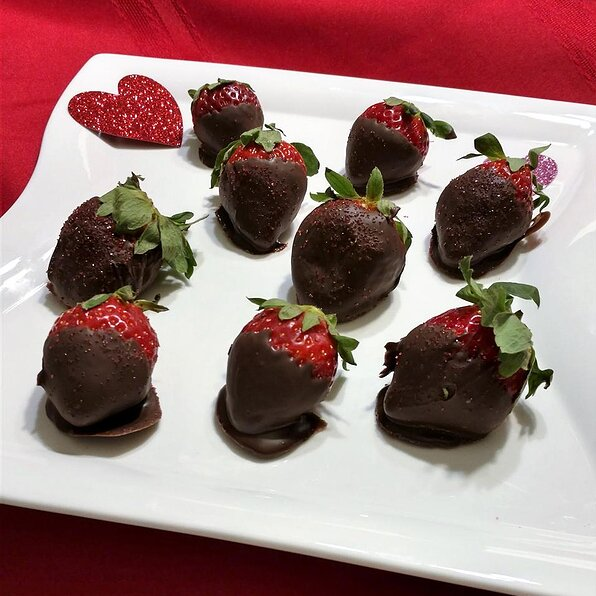

<!DOCTYPE html>
<html lang="en">
<head>
    <meta charset="UTF-8">
    <meta http-equiv="X-UA-Compatible" content="IE=edge">
    <meta name="viewport" content="width=device-width, initial-scale=1.0">
    <title>Chocolate Covered Strawberries</title>
</head>
<body>
    
</body>
</html><h1>Chocolate-Covered Strawberries</h1>


<h2>Description</h2>
    </p>I melted my chocolate in the microwave. These were a huge hit with my family. I will never purchase the high priced ones in the store. They were so easy to make and delicious. Definitely make sure you have a nice fresh strawberry when making these for better flavor.</p>
<h3>Ingredients</h3>
<ul>
    <li>Chocolate chips</li>
    <li>Fresh strawberries</li>
</ul>
<h2>Steps</h2>
<ol>
    <li><strong>Step One</strong></li>
        <p>Combine 1/2 cup semisweet chocolate chips and 1/2 cup milk chocolate chips in a double boiler over simmering water; stir frequently, scraping down the sides with a rubber spatula to avoid scorching, until melted, 3 to 5 minutes. Remove from heat; stir in remaining semisweet and milk chocolate chips.</p>
    <li><strong>Step Two</strong></li>
        <p>Line a baking sheet with waxed paper.</p>
    <li><strong>Step Three</strong></li>
        <p>Holding strawberries by their stems, swirl through melted chocolate until all sides are evenly coated. Arrange dipped strawberries on the waxed paper.</p>
    <li><strong>Step Four</strong></li>
        <p>Chill strawberries until chocolate coating sets, about 2 hours. ENJOY!</p>
</ol>